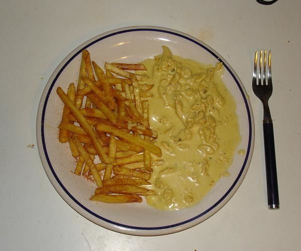

Ranet ja kanakastike

Resepti:
Uunissa paistetut ranskalaiset kermaisella kanakastikkeella
- 350g kanasuikaleita
- 1 pussi raunoja
- 2dl ruokakermaa
- 1 tl suolaa
- 1 tl mustapippuria
- Heitä ranet uuniin 250c puoli tuntia
- Paista kanat, lisää kerma ja muut haluamasi mausteet
- Nauti mieltälaajentavasta makuelämyksestä